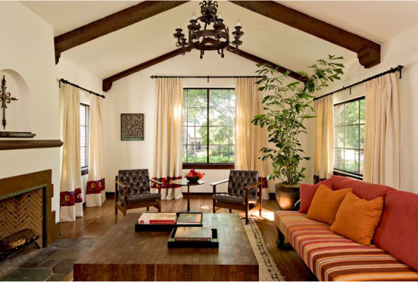

The "Sasta ru Hinasta" Trap: Why Self-Building Your Home is a Costly Illusion
In Odisha, there is a saying deeply rooted in everyday life: "Sasta ru Hinasta" - save a little today, pay a lot tomorrow.
When it comes to home construction, this is not just a saying - it is a reality many homeowners discover the hard way. What begins as an attempt to reduce cost by managing labor and materials often turns into a cycle of inefficiency, stress, and unexpected expenses.
Building a home is not just about bricks and cement. It is about planning, sequencing, execution discipline, and quality control. Without these, even small mistakes multiply into large financial losses.

The Illusion of Control
Many homeowners believe that self-managing construction gives them control over costs. You hire masons directly, purchase materials yourself, and supervise work on-site.
Initially, it feels empowering. You think:
- "I am saving contractor margins"
- "I can negotiate better rates"
- "I will ensure quality myself"
But construction is not a one-layer process. It involves multiple interdependent stages - foundation, structure, curing, finishing - each requiring precision and timing.
Without professional coordination, this "control" quickly turns into chaos.
The Hidden Costs Nobody Talks About
The biggest misconception in self-building is focusing only on visible costs. The real damage happens through invisible leakages that are rarely tracked.
- Material Wastage: Excess cement, broken tiles, and unused sand can increase your budget by 10-20%.
- Rework Costs: Incorrect execution leads to demolition and reconstruction, doubling your expense.
- Labor Inefficiency: Workers waiting, miscommunication, and poor coordination increase daily costs.
- Improper Sequencing: Completing tasks in the wrong order damages finished work and leads to repetition.
- No Quality Checks: Short-term savings lead to long-term repairs and maintenance issues.
- Time Delays: Extended timelines increase rent, EMIs, and mental stress.
The Real-Life Reality Check
Let us step into the daily life of a self-builder:
- 5:30 AM: On-site supervising curing because workers skipped it
- 10:00 AM: Disputes over cement quality and ratios
- 2:00 PM: Work halted due to missing materials
- 5:00 PM: Tile wastage increases costs unexpectedly
- Night: Stress, recalculations, and uncertainty
What seemed like a smart financial decision turns into a physically exhausting and mentally draining process.
Self-Build vs Professional Execution
Self-Building
- No structured planning
- Scattered accountability
- Frequent rework
- High wastage
- Unpredictable costs
- High stress levels
Saansud Infra
- End-to-end planning
- Centralized accountability
- Optimized material usage
- Strict quality checks
- Transparent pricing
- Timely delivery
The Saansud Shift
Your home is one of the most important investments of your life. It deserves a process that is structured, predictable, and professionally managed.
- Execution Discipline: Every step planned and monitored
- Cost Transparency: No hidden surprises
- Quality Assurance: Built to last for decades
- End-to-End Ownership: From planning to handover
With Saansud Infra, you do not just build a house - you build confidence, reliability, and long-term value.
Saving ₹50,000 today can cost you ₹5,00,000 tomorrow.
Smart homeowners do not ask "How cheap?" -
they ask "How right?".
Take the Next Step
Get clarity before you build. Plan smarter, not harder.
Visit our Costing & Quote page
Explore our Project Portfolio
Build Smart. Build Once.
Avoid costly mistakes and build with a trusted construction partner who values quality and transparency.
Get a Free Consultation